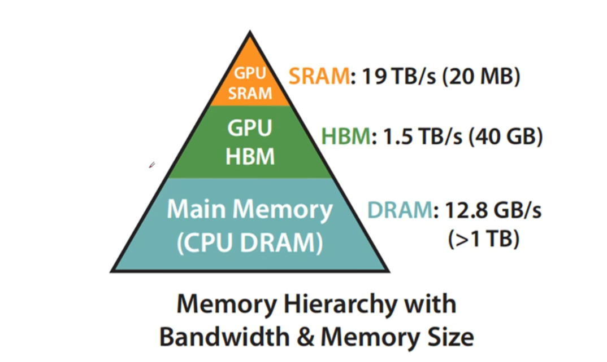
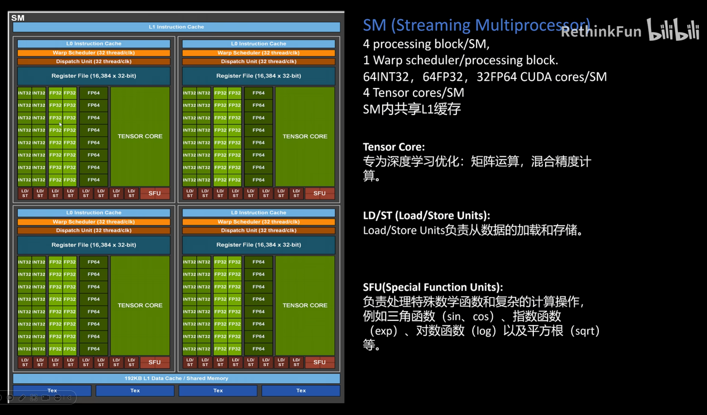
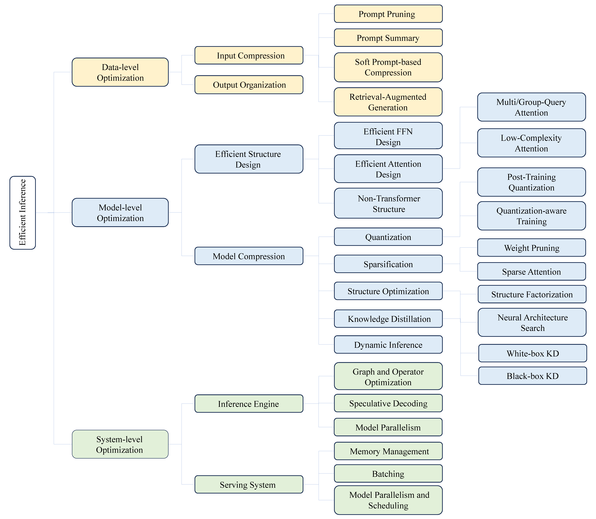
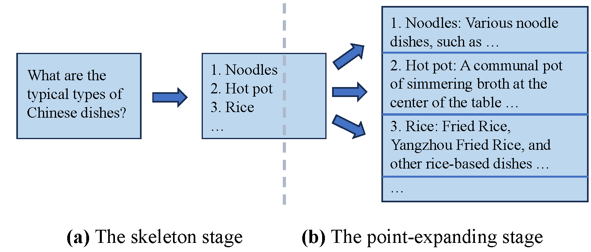
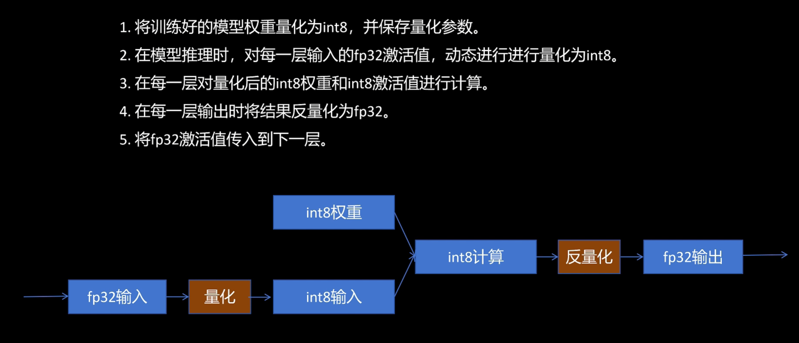
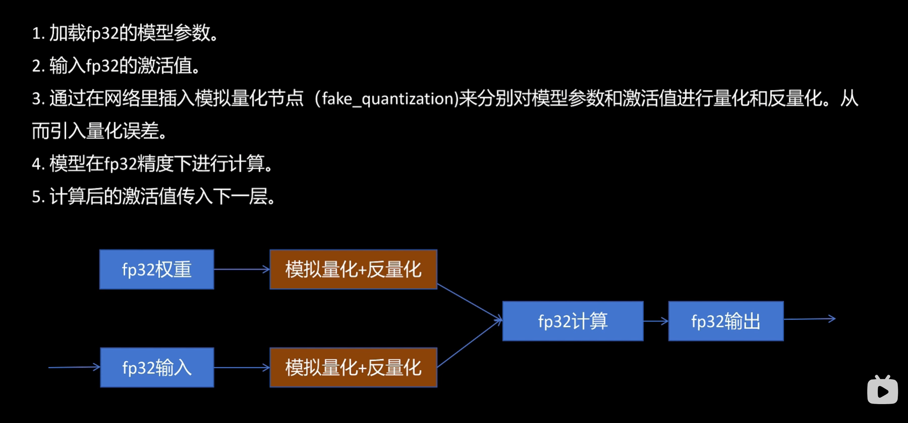
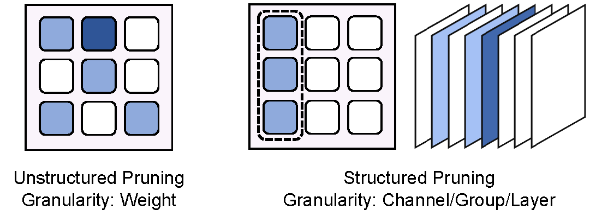
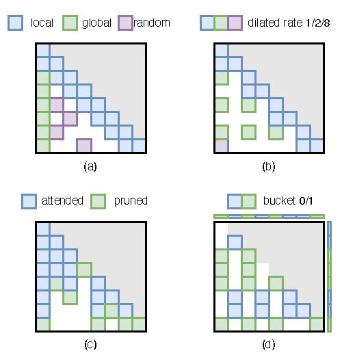

# GPU 内存概论

如上图，DRAM 用于电脑内存；HBM 用于芯片外显卡显存；SRAM 用于 GPU 芯片内，如 L1 Cache、L2 Cache；
GPU 内有大量 Core 和 thread，使用 SIMT（单一指令，多线程执行）技术，比如矩阵乘法里结果里的每个元素可以分配一个线程。32 个线程一组，叫做一个 Warp。Warp 是 GPU 里调度任务的最小单元。
GPU 由大量的块组成，每个块称作一个 SM（流式处理器），一个 SM 结构如下：

由于显存传输相对慢，计算单元更快更空闲，因此我们希望减少 GPU 空闲 ——
因为矩阵乘法的计算时间复杂度为，空间复杂度为
所以切分矩阵维度即可：
- 数据传输的慢，用大矩阵
- 数据传输快，用小矩阵
但是如果传输慢、矩阵还小，就没辙了
回到大模型加速，根据论文《A Survey on Efficient Inference for Large Language Models》，我做了如下总结。
LLM 推理的三大成本：
- 计算成本
- 内存访问成本
- 内存占用成本
对大模型的推理加速流派做一个总结，分类如下图：

# 数据层优化
# 输入压缩技术
提示词剪枝：即去除提示词里的废话，保留有用信息
提示词总结：对很长的提示词（整篇 word）概括一个 summary，以此作为提示词的浓缩交给模型
软提示词：在输入文本前加入一些向量，这些向量可以激活大模型某一方面的知识，然后得到更好的效果。软提示词是可训练迭代的向量，先冻结大模型的参数，推理微调，更新软提示词；不断循环直到软提示词效果不错，不改了 —— 最后推理就是最终结果；一次训练，多次推理。
检索增强生成（RAG）：也就是所谓的大模型联网。通过检索和输入相关的辅助内容，并只将这些相关的内容加入到输入提示词中，来降低原本的输入长度（相比于加入所有辅助内容）
# 输出规划技术
规划输出内容，尽量并行生成某些部分的，以此优化推理延时。比如思维骨架方法（SoT），最终回复依总分结构并行生成，如下图：

# 模型层优化
# 高效结构设计（改变模型）
-
改造 FFN：比如 MOE 技术，还有 deepseek 搞的更多专家激活、共享基础知识的 MOE
-
改造 MHA：
- 共享 KV 的 多询问注意力技术（Multi-Query）
- 核函数算子替换 softmax，就是换一种激活方式，把碍事贼拉慢的 softmax 换掉，从 变成
- 低秩算子，如 Linformer（每个 token 的钥匙不变，把 KV 信息量维度压缩，比如压缩为 128 个锁 & 对应信息），于是获得线性复杂度；
-
寻找线性架构替代 Transformer
# 模型压缩（简化模型）
# 量化
量化就是通过 scaling 或者 bias，将模型参数与输入激活值，从 fp32、fp16 转化为 int8，加速计算与内存 IO；量化可分为 ——
- 训练后量化

- 训练感知量化

# 模型稀疏
- 权重稀疏
又称作权值剪枝，即从模型中去除不太关键的权值和结构。这种稀疏化方法分为两种主要类型：非结构化修剪和结构化修剪。非结构化剪的细、预测影响小，但是不规则，会阻碍硬件加速能力；结构化一剪剪一个 channel/layer/group；后者更有用

- 注意力稀疏
就是注意力信息不把整个句子全算，只算一部分。比如对每个 token，算他 <邻近的>+< 全局头部 >+< 随机 >

# 结构优化
- 神经网络架构搜索
先定义好 “候选网络” 的积木组件 —— 例如可以有哪些层（卷积、池化、激活等）、每层能选的超参数、网络层之间怎么连接；然后让机器自己探索，选出最优架构。对于大模型不太能用，因为探索时要试错，要训练，cost 太大
- 低秩分解（如 LoRA）
把一个大的权重矩阵分解成两个小矩阵相乘，降低 LLM 的权重的存储开销和访存开销，从 变为
# 知识蒸馏
用一个大模型（教师模型）来辅助训练一个小模型（学生模型），从而将大模型的知识传递给小模型，通过小模型更小的开销达到相似的精度效果。
- 白盒：可以获得教师模型的架构和权重，利用更多信息（特征、输出概率等）训练学生模型
- 黑盒：只能获取输出，所以需要构造数据训练学生模型
# 动态推理（条件计算）
在模型中插入 “小判断器”（Router、Gate 或者 Early Exit Module），负责评估当前数据是否 “简单” 或 “困难”，并决定 “是否跳过后面层 / 通道”，或提前输出结果。
例如，模型做完某层后，判断 “我确定预测为猫？”，如果信心够高，就可以直接输出，无需继续深层计算。
# 系统层优化
# 推理引擎
- 图和算子优化
翻译的太怪了…… 还有算子这个翻译，明明意思就是 “一个计算步骤”，无力吐槽
-
所谓图优化，其实就是着眼于多个算子组合在一起的整个计算流程，进行流程重构与优化，比如
-
“把
Conv + ReLU合并为一个高效运算，消除重复计算” -
“把
MatMul + Transpose换成支持转置的MatMul”，多步合成一步
-
-
算子优化就是优化一个计算操作（著名代表 FlashAttention ），比如
-
对
MatMul、Conv、Softmax等算子，使用硬件平台（如 NVIDIA、Intel、ARM）的底层高效版本 -
在一个 kernel 中串行执行多个操作，减少中间数据读写
-
矩阵分块（tiling），减少显存 IO
-
- 推测解码
使用一个便宜的小模型（被称为草稿模型）来预测未来的若干个词块，再用大模型并行地验证这些词块是否准确。
# 服务系统
就是硬件相关加速技术，看不懂了…… 很底层